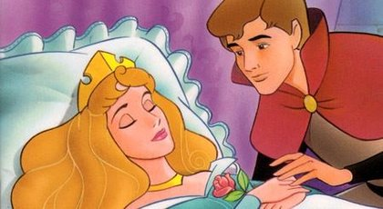

Uyuyan Güzel

Bir varmış, bir yokmuş. Evvel zaman içinde, kalbur saman içinde uzaklar ülkesinin yakınında ,
güzellikler ülkesinin hemen yanıbaşında bir ülke varmış. Mutluluklar ülkesiymiş. Bu ülkenin kral ve kraliçesinin çocukları olmazmış.
Ama günlerden bir gün kraliçenin bir bebek beklediği duyulmuş. Herkes bu olaydan memnuniyet duymuş.
Günler günleri kovalamış, kral ile kraliçe bir kız çocukları olunca bu mutlu günün şerefine bir ziyafet vermişler.
Bu ziyafet için ülkenin dört bir yanından konuklar hediyeler getirmişler. Bebek için getirdikleri hediyeleri vermek için bekleyen konuklar,
gonkların çalınmasıyla birlikte hediyelerini vermeye başlamışlar. . Güzellikler perisi hemen öne çıkmış;mutluluk, güzellik, şirinlik veriyorum ona demiş.
Tam o sırada kalabalığın içinde bir uğultu duyulmuş. Kötülükler perisiymiş öne çıkan;
- Benim neden davetiyem yok! Diye kükremiş adeta.
Kral ve kraliçe ne yapacaklarını şaşırmışlar . kem küm etmişler cevap verememişler. Hizmetkarlara sofrada bir yer açın
demişler ama kötülükler perisi küçük prensesin yanına gelmiş bile. Kundağını kucağına almış;
- “Benim de prensese hediyem, on beşinci yaş gününde parmağına iğ batar batmaz ölmesi,” demiş .
Kötülükler perisi geldiği gibi kaybolmuş ortalıktan. Kraliçe ağlamaya başlamış.
Güzellikler perisi öne çıkmış. “Ben hediyemi vermedim daha,” demiş yumuşak bir sesle. “Kötü büyüyü bozamam belki, ama onu değiştirebilirim.
Benim hediyem de büyüyü, Prenses’in parmağına iğ battığında ölmesi yerine, yüz yıl uyuması şeklinde değiştirmek olsun o zaman.” Güzel başlayan gün,
kraliçenin hıçkırık sesleriyle son bulmuş.
Yıllar geçmiş aradan, güzeller güzeli prenses, mutlu bir şekilde yaşayıp gidiyormuş. Kral’la Kraliçe kötü büyüyü çoktan unutmuşlar. Zaten ülke
içinde ne kadar iğne varsa, daha Prenses bebekken yok edilmiş. Prenses uzun yıllar güvendeymiş. Fakat tam da on beşinci yaşına bastığı gün Prenses
daha önce hiç fark etmediği bir kapı keşfetmiş. Kapıyı açmış, kıvrıla kıvrıla yukarı çıkan bir merdivenle karşılaşmış. Merdiveni çıkınca üzerinde
altın bir anahtar bulunan bir kapıya varmış. Kapıyı açınca, içerdeki küçük odada tekerlekli bir şeyi çalıştıran yaşlı bir kadın görmüş. “Ne yapıyorsunuz öyle?”
diye sormuş prenses. Yaşlı kadın gülümsemiş. “İplik eğiriyorum!” demiş. “Orada öyle bakıp durma. Gel, bir de sen dene, hadi.”O anda olanlar olmuş. İğin sivri
ucu Prenses’in parmağına batmış, Prenses hemen yere yığılıp kalmış.
Yıllar yavaş yavaş akıp geçmiş. Yakışıklı bir prens beraberindekilerle birlikte bu sarayın yakınlarından geçiyormuş… Bu saraydaki uyuyan güzelin hikayesini
o da duymuş. Saraya gelmiş, kral ve kraliçe yıllardır uyuyan kızlarının başında nöbet tutuyorlarmış. Bir daha kızlarını konuşurken, koşarken göremeyeceklerini
biliyorlarmış, çünkü o uyandığı zaman kraliçe çoktan ölmüş olacakmış. Hizmetkarlar bir prensin geldiğini ve uyuyan güzeli görmek istediğini söylemişler.
Prensi içeri davet etmişler, prens prensesi görür görmez aşık olmuş. Eğilip alnından öpmüş, öpmesiyle birlikte sihir bozulmuş. Prenses gözlerini açmış ve uzun
süreli uyku son bulmuş. Prens ve prenses evlenmişler, kırk gün kırk gece düğün yapmışlar ve hep mutlu yaşamışlar.